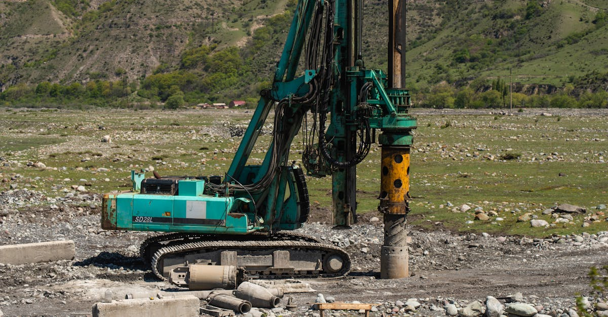

La Quête Incessante du "Nouvel Or Noir" Américain : Un Mirage Répétitif ?
Depuis des décennies, l'industrie énergétique américaine est hantée par le spectre d'un nouveau boom pétrolier, une résurgence de la puissance qui a défini une époque. Pourtant, comme le souligne Jack McClendon dans ses analyses pour Bloomberg, cette entreprise s'avère étonnamment complexe. L'histoire est jalonnée de cycles : l'euphorie initiale, l'investissement massif, la surproduction, la chute des prix, et enfin, la consolidation douloureuse. Chaque nouveau chapitre semble promettre le retour des jours fastes, mais les réalités économiques, géopolitiques et technologiques imposent des contraintes souvent sous-estimées. McClendon insiste sur l'ingéniosité intrinsèque de l'« American oil man », un esprit tenace capable de surmonter des obstacles apparemment insurmontables. Cependant, cette résilience ne suffit pas toujours à inverser les forces macroéconomiques. Les coûts de production, la pression environnementale croissante, la volatilité des marchés mondiaux et l'émergence de nouvelles sources d'énergie créent un environnement de plus en plus exigeant. Le rêve d'une indépendance énergétique totale, alimenté par des découvertes spectaculaires, se heurte à la dure réalité de la gestion des ressources et des cycles économiques. Les investisseurs, souvent attirés par la promesse de rendements rapides, doivent naviguer dans ces eaux troubles, conscients que les booms ne sont jamais éternels et que les cycles baissiers peuvent être brutaux. La question n'est donc pas seulement de savoir si un nouveau boom est possible, mais à quelles conditions et pour combien de temps. L'histoire nous enseigne la prudence face aux promesses trop belles pour être vraies, même lorsqu'elles émanent de l'une des industries les plus dynamiques du monde.
👉 À lire : Crise Iran : l'IA redéfinit le trading de l'or
Les Facteurs Clés Freinant le Potentiel d'un Nouveau Boom Pétrolier
Plusieurs éléments structurels rendent la réplication des précédents booms pétroliers américains particulièrement ardue. Premièrement, l'épuisement progressif des gisements les plus faciles d'accès et les moins coûteux à exploiter. Les techniques de fracturation hydraulique et de forage horizontal ont certes repoussé les limites, mais elles s'appliquent souvent à des ressources plus complexes, plus profondes ou moins concentrées, entraînant une augmentation des coûts d'extraction. McClendon met en lumière cette réalité : le pétrole facile est déjà largement exploité. Deuxièmement, la pression environnementale et réglementaire s'intensifie. Les préoccupations liées au changement climatique poussent les gouvernements et les investisseurs à privilégier les énergies renouvelables et à imposer des normes plus strictes sur l'exploration et la production d'hydrocarbures. Cela se traduit par des délais d'autorisation plus longs, des coûts de conformité plus élevés et, parfois, une opposition publique directe aux nouveaux projets. Troisièmement, le coût du capital. Dans un environnement où les critères ESG (Environnementaux, Sociaux et de Gouvernance) prennent de plus en plus d'importance, le financement de projets pétroliers à grande échelle devient plus difficile et plus cher. Les institutions financières sont plus réticentes à investir dans des actifs fossiles jugés risqués à long terme. Enfin, la dynamique du marché mondial. La demande mondiale de pétrole, bien qu'encore forte, est soumise à des incertitudes croissantes dues à l'efficacité énergétique, à l'électrification des transports et aux politiques de transition énergétique. Un boom américain, s'il devait se produire, pourrait rapidement saturer le marché, entraînant une chute des prix et rendant le projet non rentable. Ces facteurs combinés créent un environnement où la simple volonté ou l'ingéniosité ne suffisent plus à garantir le succès d'une nouvelle ère d'abondance pétrolière.
👉 À lire : IA : Le Nouvel Outil des Investisseurs en Métaux Précieux
L'Ingéniosité Américaine : Un Atout Indéniable, Mais Suffisant ?
Le cœur de l'argument de McClendon réside dans la formidable capacité d'innovation et d'adaptation de l'industrie pétrolière américaine. L'histoire est pleine d'exemples où des défis techniques jugés insurmontables ont été relevés grâce à l'ingéniosité des ingénieurs et des opérateurs. La révolution du gaz de schiste en est le témoignage le plus éclatant. Il y a vingt ans, peu auraient parié sur la capacité des États-Unis à devenir un producteur majeur de gaz naturel et de pétrole grâce à des techniques de forage non conventionnelles. Cette prouesse technologique a non seulement transformé le paysage énergétique américain, mais a également eu des répercussions mondiales considérables. L'esprit pionnier, la prise de risque calculée et la culture de l'amélioration continue sont des traits distinctifs de cet « American oil man ». Ces qualités sont essentielles pour explorer des environnements difficiles, développer de nouvelles méthodes d'extraction et optimiser la production. Cependant, l'ingéniosité seule ne peut pas dicter les lois de l'offre et de la demande, ni ignorer les réalités géopolitiques. Un boom pétrolier ne dépend pas uniquement de la capacité à extraire plus de barils à moindre coût. Il nécessite également un environnement de prix stables et suffisamment élevés pour justifier les investissements massifs et risqués. Il faut aussi une demande mondiale soutenue et une acceptation sociale et politique des activités d'extraction. L'ingéniosité peut résoudre des problèmes techniques, mais elle ne peut pas créer une demande artificielle ni éliminer les préoccupations environnementales. C'est là que la nuance s'impose : l'ingéniosité est une condition nécessaire, mais elle n'est pas suffisante pour garantir un nouveau boom pétrolier durable et profitable.

L'Or et les Métaux Précieux : Un Refuge Face à la Volatilité Énergétique
Dans ce contexte d'incertitude entourant les booms pétroliers et la volatilité intrinsèque des marchés des matières premières énergétiques, l'or et les métaux précieux reprennent une place centrale dans les stratégies d'investissement. Historiquement, l'or a toujours été considéré comme une valeur refuge, un actif tangible capable de préserver le pouvoir d'achat face à l'inflation et à l'instabilité économique et géopolitique. Alors que les spéculations sur les booms pétroliers font fluctuer les marchés, créant des opportunités mais aussi des risques considérables, les investisseurs cherchent des actifs moins corrélés aux cycles économiques traditionnels. L'or, par sa nature, répond à cette demande. De plus, la transition énergétique mondiale, bien que prometteuse, engendre ses propres défis et incertitudes. Les investissements massifs nécessaires, les tensions sur l'approvisionnement en matières premières critiques (comme le cuivre, le lithium, le nickel, essentiels aux batteries et aux énergies renouvelables) et les potentiels déséquilibres économiques créent un terrain fertile pour la volatilité. Dans ce paysage complexe, les métaux précieux comme l'argent, le platine et le palladium, bien que plus volatils que l'or, jouent également un rôle. Ils sont à la fois des actifs de diversification et des composants essentiels de nombreuses technologies, y compris dans le secteur de l'énergie verte. L'analyse des dynamiques du marché pétrolier, bien que distincte, offre un éclairage précieux sur la nature cyclique et imprévisible des marchés des matières premières. Elle renforce l'argument en faveur d'une diversification judicieuse, incluant des actifs traditionnellement considérés comme des protections contre l'incertitude, tels que l'or.
L'Intelligence Artificielle au Service du Trading d'Or et de Métaux Précieux
Face à la complexité croissante des marchés financiers et à la volatilité des matières premières, l'intelligence artificielle (IA) émerge comme un outil révolutionnaire pour les investisseurs. Chez GoldTrade AI, nous avons développé un agent IA spécifiquement conçu pour naviguer sur les marchés de l'or et des métaux précieux. Cet agent opère 24h/24, 7j/7, exploitant la puissance de l'analyse de données massives pour identifier les opportunités de trading les plus prometteuses. Contrairement aux traders humains, dont les décisions peuvent être influencées par l'émotion, la fatigue ou les biais cognitifs, notre IA fonctionne sur la base d'algorithmes sophistiqués et d'une logique implacable. Elle analyse en temps réel une multitude de facteurs : données macroéconomiques, indicateurs techniques, flux d'ordres, actualités géopolitiques, et même des signaux subtils émanant des marchés connexes comme celui du pétrole. L'objectif est de détecter les tendances émergentes, d'anticiper les mouvements de prix et d'exécuter des transactions avec une rapidité et une précision inégalées. L'IA permet de surmonter les limites humaines en termes de capacité de traitement de l'information et de réactivité. Elle peut identifier des corrélations complexes et des schémas que l'œil humain pourrait manquer. Dans un monde où l'information circule à la vitesse de la lumière et où les marchés peuvent réagir instantanément aux événements, disposer d'un outil capable d'analyser et d'agir en continu est un avantage compétitif décisif. Notre agent IA est conçu pour optimiser les rendements tout en gérant rigoureusement les risques, offrant ainsi une solution de trading performante et accessible.

Comment l'IA Analyse la Dynamique Pétrole-Or pour Optimiser les Trades
La relation entre le prix du pétrole et celui de l'or est complexe et souvent indirecte, mais elle constitue une source d'informations précieuses pour les stratégies de trading sophistiquées. L'agent IA de GoldTrade AI est programmé pour décrypter ces interconnexions. Historiquement, une hausse des prix du pétrole peut entraîner une augmentation de l'inflation, ce qui rend l'or, une valeur refuge traditionnelle, plus attractif. Les coûts de production et de transport plus élevés dus à l'énergie renchérissent également la production et le transport des biens, alimentant les pressions inflationnistes. Inversement, une chute brutale des prix du pétrole peut signaler un ralentissement économique mondial, ce qui pourrait peser sur la demande d'or industriel mais renforcer son rôle de refuge en période d'incertitude accrue. De plus, les politiques monétaires réagissant aux chocs pétroliers (hausse ou baisse des taux d'intérêt) ont un impact direct sur l'attractivité de l'or. L'IA peut modéliser ces relations dynamiques en analysant des milliers de points de données historiques et en temps réel. Elle peut identifier des seuils critiques, des schémas de corrélation inversée ou positive, et prédire comment un mouvement significatif sur le marché pétrolier pourrait se répercuter sur le marché de l'or ou d'autres métaux précieux. Par exemple, si l'IA détecte que les coûts énergétiques croissants commencent à impacter significativement les chaînes d'approvisionnement mondiales, elle peut ajuster sa stratégie de trading sur l'or pour anticiper une potentielle hausse due aux craintes inflationnistes. Cette capacité d'analyse multi-marchés et multi-facteurs est ce qui distingue le trading assisté par IA des approches traditionnelles.
Les Défis Réglementaires et Technologiques pour les Futures de l'Or
L'environnement réglementaire entourant les marchés financiers, y compris ceux de l'or et des métaux précieux, est en constante évolution. Pour les acteurs comme GoldTrade AI, il est crucial de naviguer dans ce paysage complexe tout en restant à la pointe de la technologie. Les régulateurs du monde entier cherchent à assurer la stabilité des marchés, à protéger les investisseurs et à prévenir les manipulations. Cela se traduit par des exigences de transparence accrues, des règles plus strictes sur la détention et le règlement des transactions, et une surveillance renforcée des activités de trading algorithmique. L'IA, par sa vitesse et son autonomie, soulève des questions spécifiques pour les régulateurs. Comment s'assurer que les algorithmes ne créent pas de conditions de marché artificielles ou ne déclenchent pas de ventes massives incontrôlées ? La conformité réglementaire est donc un enjeu majeur. L'agent IA doit être conçu pour opérer dans le respect strict des cadres légaux en vigueur dans les juridictions où il opère. Parallèlement, les défis technologiques sont constants. La puissance de calcul nécessaire pour traiter d'énormes volumes de données en temps réel, la nécessité de développer des algorithmes toujours plus performants et capables d'apprendre et de s'adapter, et la sécurisation des plateformes de trading sont des domaines où l'innovation est permanente. L'infrastructure technologique doit être robuste, fiable et évolutive pour supporter les exigences d'un trading haute fréquence et complexe. Chez GoldTrade AI, nous investissons continuellement dans la recherche et le développement pour garantir que notre agent IA non seulement respecte les normes réglementaires, mais bénéficie également des avancées technologiques les plus récentes, assurant ainsi une performance optimale et une sécurité maximale pour nos utilisateurs.
L'Avenir du Trading : IA, Métaux Précieux et Diversification Stratégique
L'analyse des difficultés rencontrées par l'industrie pétrolière américaine pour générer un nouveau boom récurrent nous rappelle une leçon fondamentale : la prévisibilité est une illusion dans les marchés des matières premières. Les cycles économiques, les innovations technologiques, les changements géopolitiques et les préoccupations environnementales créent une dynamique complexe et souvent imprévisible. Dans ce contexte, la diversification des actifs et l'utilisation d'outils d'analyse avancés deviennent plus pertinentes que jamais. L'or et les métaux précieux, par leur rôle historique de valeur refuge et leur importance croissante dans les technologies vertes, offrent une composante essentielle à une stratégie d'investissement équilibrée. Ils ne sont pas immunisés contre la volatilité, mais leur comportement tend à différer de celui des marchés plus cycliques comme celui du pétrole. L'intelligence artificielle, avec sa capacité à traiter des données à une échelle et une vitesse surhumaines, transforme la manière dont ces marchés sont abordés. Un agent IA comme celui développé par GoldTrade AI peut identifier des opportunités subtiles, gérer les risques de manière proactive et opérer sans relâche, offrant ainsi un avantage significatif. L'avenir du trading réside probablement dans la synergie entre la sagesse des marchés traditionnels (comme la reconnaissance de la valeur de l'or) et la puissance des nouvelles technologies. Pour les investisseurs cherchant à naviguer dans un monde économique de plus en plus complexe, l'association d'une allocation stratégique aux métaux précieux et l'exploitation des capacités de l'IA représente une voie prometteuse vers la préservation et la croissance du capital.
Conclusion : Naviguer dans l'Incertitude avec l'IA et l'Or
L'industrie pétrolière américaine, malgré son histoire de succès et l'ingéniosité de ses acteurs, fait face à des défis structurels qui rendent la perspective d'un nouveau boom pétrolier durable incertaine. Les coûts, la réglementation, la pression environnementale et la dynamique des marchés mondiaux imposent des limites réalistes à cette quête. Cette incertitude, loin d'être une mauvaise nouvelle pour tous les investisseurs, souligne l'importance de la diversification et de la recherche d'actifs moins corrélés aux cycles traditionnels. L'or et les métaux précieux continuent d'offrir une stabilité relative et une protection contre l'inflation et l'instabilité. Dans ce paysage complexe, l'intelligence artificielle se révèle être un allié puissant. L'agent IA de GoldTrade AI, opérant 24h/24, analyse les marchés de l'or et des métaux précieux avec une précision algorithmique, exploitant les corrélations subtiles, y compris celles avec des marchés comme celui du pétrole, pour identifier les meilleures opportunités. Il permet de surmonter les biais émotionnels humains et d'agir avec une rapidité inégalée. Ainsi, pour ceux qui cherchent à sécuriser et à faire fructifier leur patrimoine dans un environnement économique en mutation constante, la combinaison d'une stratégie d'investissement judicieuse axée sur les métaux précieux et l'utilisation d'outils de trading basés sur l'IA représente une approche moderne et efficace. L'avenir appartient à ceux qui savent allier la compréhension des marchés traditionnels à la maîtrise des technologies de pointe.